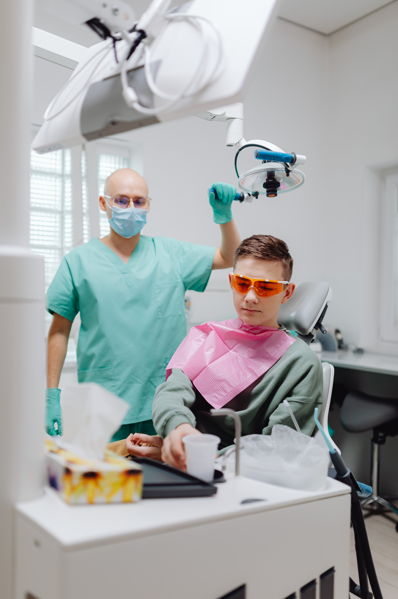
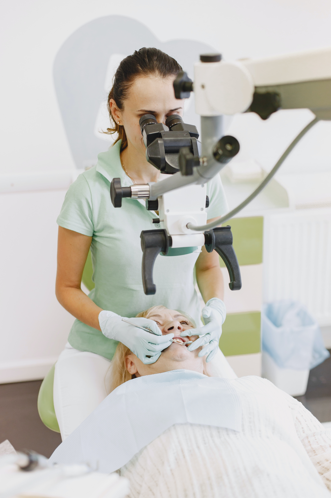
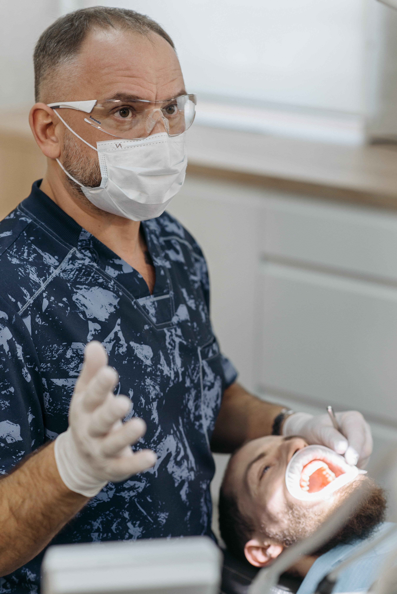

Ortodoncia
Nos ocupamos de prevenir, identificar y resolver las alteraciones por
medio de la aplicación de aparatología fija o removible. Los aparatos
ortodónticos pueden ser utilizados para corregir malposiciones o
maloclusiones dentarias a cualquier edad.
Somos especialistas en la rehabilitación de personas con fisuras labio
palatinas, palatinas una y bilaterales , como complemento posterior a
las cirugías reparadoras.
Comunmente se piensa que ortodoncia no es más que mover dientes con una
finalidad estética, y no es así porque además podemos mejorar muchos
trastornos funcionales del sistema oronasal.
Por ejemplo, una expansión temprana de un paladar estrecho puede
solucionar un hábito de respiración oral. O un paciente con un
"apiñamiento” dental severo puede tener problemas para pronunciar
correctamente. Debemos recordar que los dientes están situados en una
posición estratégica dentro del complejo craneomaxilofacial y son
protagonistas no actores secundarios.
Muchas veces oímos que debemos MASTICAR lentamente para conseguir buenas
digestiones que son la base de una buena salud. No sólo lentamente sino
eficazmente. Para eso necesitamos una correcta oclusión. Esa mala
mordida puede afectar seriamente la salud general de la boca y de la
articulación de la mandíbula (Articulación Temporo-mandibular).Los
dientes encimados o chuecos son difíciles de limpiar y de mantener
aseado y con el tiempo se puede contribuir a la formación de caries, de
sarro, a la inflamación de encías, a la reabsorción del soporte óseo y
como consecuencia a la pérdida del diente. La mordida incorrecta resulta
en desgastes anormales de los dientes, dificultades para comer y daño en
los tejidos de soporte del diente (encías y hueso).

Las caries
Son perforaciones en los dientes. Suelen aparecer en los niños , pero
afectan a cualquier persona y son una causa común de pérdida de los
dientes en las personas más jóvenes.
La placa se acumula en los dientes al cabo de 20 minutos después de
comer. Si ésta no se quita, comenzará a presentar caries. Los ácidos en
la placa dañan el esmalte que cubre el diente y crean orificios allí
(caries). Las caries generalmente no duelen, a menos que se tornen muy
grandes y afecten los nervios o causen una fractura del diente. Sin
tratamiento, pueden llevar a la destrucción interior del diente (pulpa),
lo cual causa la pérdida de éste. Los azúcares aumentan el riesgo de
caries dentales. Los alimentos pegajosos son más dañinos que los no
pegajosos, ya que permanecen sobre los dientes.

Prevención
La higiene oral es necesaria para prevenir las caries y consiste en
cepillarse por lo menos dos veces al día.
Los sellantes dentales pueden prevenir algunas caries. Los sellantes son
películas de material similar al plástico que se aplican sobre las
superficies de masticación de los dientes molares y previene la
acumulación de placa en los surcos profundos de estas superficies. Los
sellantes suelen aplicarse a los dientes de los niños, poco después de
la erupción de los molares.

Obturaciones
El odontólogo obtura el diente eliminando el material dental cariado con
el uso de una fresa dental y lo reemplaza con un material como las
resina compuesta. Este material se asemeja a la apariencia natural del
diente. Un tratamiento de conductos se recomienda si el nervio del
diente muere como consecuencia de una caries o de una lesión. Se extrae
el centro del diente, incluidos el nervio y el tejido (pulpa) vascular,
junto con las porciones cariadas del diente y las raíces se rellenan con
un material sellante. El diente se rellena y por lo regular se necesita
una corona.